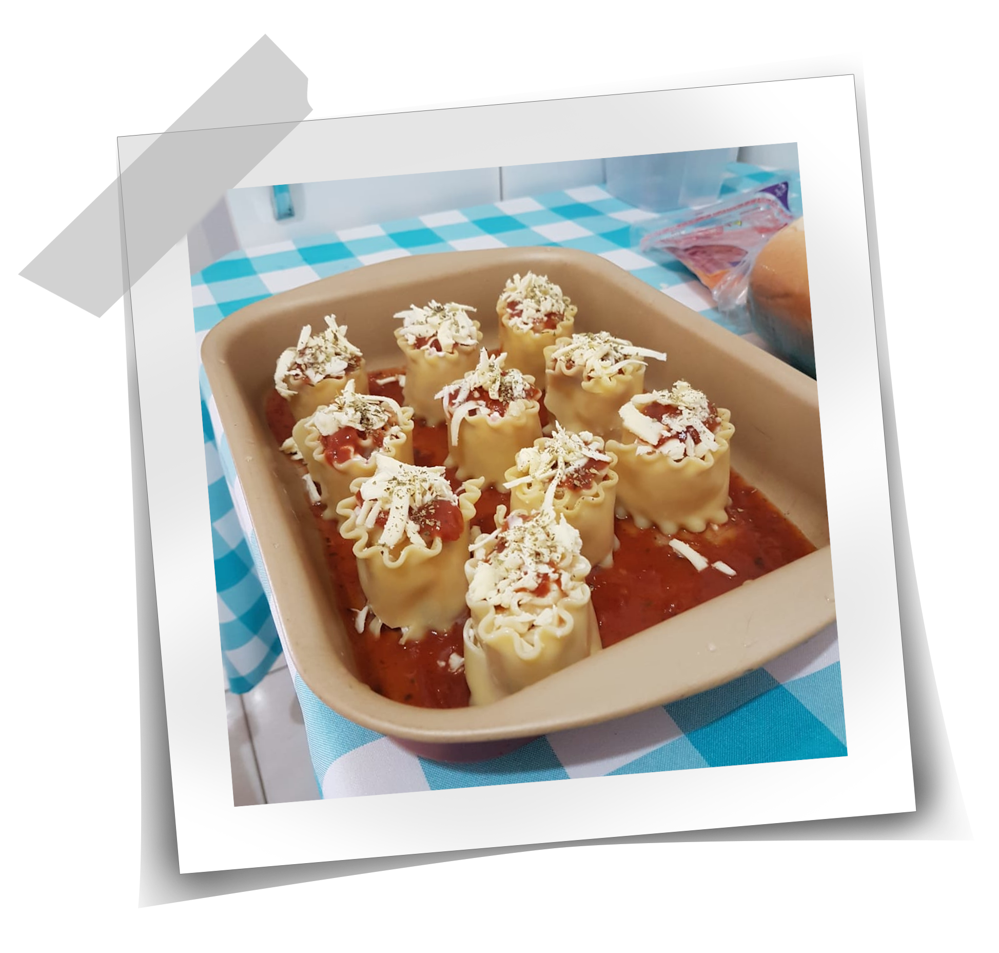

Nosso Livro de Receitas
Aqui você vai encontrar todas as nossas receitas preferidas!
(Em construção)

Lasanha Rolinho

Ingredientes:
- 12 tiras de massa de lasanha;
- 1/2 caixa de creme de leite;
- 2 colheres de sopa de requeijão;
- 200 gramas de mussarela ralada;
- 150 gramas de presunto ralado;
- Molho de tomate;
- Orégano.
Modo de Preparo:
- Cozinhe as tiras de massa de lasanha conforme orientações de preparo e reserve;
- Despeje molho de tomate numa assadeira até cobrir o fundo e reserve;
- Para fazer o recheio misture o creme de leite, presunto, requeijão e 150 gramas de mussarela em uma vasilha;
- Coloque uma pequena quantidade de recheio em cima da tira de lasanha já cozida, enrole até a outra extremidade e coloque na assadeira preparada. Faça isso com todas as tiras;
- Despeje molho de tomate sobre os rolinhos, coloque o restante de queijo e orégano a gosto;
- Leve ao forno por aproximadamente 20 minutos e está pronto para servir!
<- Voltar